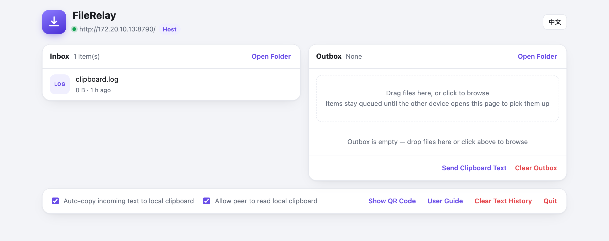

Two-way file & text transfer on the local network. The guest side installs nothing — scan a QR code, the browser is the app.
局域网内文件与文字双向直传。访客侧零安装 —— 扫码即用，浏览器就是 App。
Menu bar app + notifications. Unzip → move to /Applications. If macOS warns on first launch, run once:xattr -dr com.apple.quarantine /Applications/FileRelay.app
菜单栏应用 + 系统通知。解压 → 拖进 /Applications。首次启动若提示"已损坏"或"身份不明"，执行一次：xattr -dr com.apple.quarantine /Applications/FileRelay.app
No packaged build (the menu bar is macOS-only — and the server needs nothing else). Unzip, double-click scripts\start.bat. Requires Python 3.8+ (Add to PATH).
无打包版（菜单栏是 macOS 专属，服务端本就零依赖）。解压后双击 scripts\start.bat。需 Python 3.8+（安装时勾选 Add to PATH）。
Same source zip. ./scripts/start.sh in a terminal — foreground, Ctrl+C to stop. Python 3.8+ is the only requirement.
同一个源码包。终端里 ./scripts/start.sh —— 前台运行，Ctrl+C 停止。只需 Python 3.8+。
💡 The guest side never installs anything — Android / iOS / another computer just scan the QR code. All downloads are also on the Releases page.
💡 访客侧永远零安装 —— 安卓 / iOS / 另一台电脑扫码即用。所有下载也都在 Releases 页。
Android, iOS, tablets, another computer — anything with a browser. The host runs the service; guests just open the page.
访客零安装安卓 / iOS / 平板 / 另一台电脑，有浏览器就行。服务跑在主机上，访客打开网页即可。
Phone uploads to the computer; the computer drops files into the outbox for the phone to pick up. Original names kept, never renamed.
双向传输手机传电脑、电脑发手机（发件箱拖入即发）。文件按原名保存，不改名不压缩。
Two independent opt-in switches. Reading the host's clipboard is off by default — clipboards hold secrets.
双向剪贴板两个方向独立开关。读取主机剪贴板默认关闭 —— 剪贴板里常有密码。
Chinese / English switchable in the app and on every page of both user guides.
中英双语应用内一键切换中英，两份使用手册全双语。
macOS menu bar app included; Windows & Linux run the same zero-dependency Python server.
主机跨平台macOS 菜单栏应用；Windows / Linux 跑同一个零依赖 Python 服务。
No cloud, no account, no telemetry — traffic never leaves your router. Optional access token for public Wi-Fi.
隐私优先无云、无账号、无遥测 —— 流量不出路由器。公共 Wi-Fi 可开访问口令。

./scripts/start.sh or start.bat (Python 3.8+, no dependencies)../scripts/start.sh 或 start.bat（需 Python 3.8+，零依赖）。http://127.0.0.1:8765/.http://127.0.0.1:8765/。⚠️ Designed for trusted local networks only (plain HTTP by design). On public Wi-Fi, enable the access token: TOKEN=auto. For cross-network use, bring your own tunnel (e.g. Tailscale).
⚠️ 仅限可信局域网使用（明文 HTTP 是刻意设计）。公共 Wi-Fi 请开启口令 TOKEN=auto；跨网段请自备隧道（如 Tailscale）。